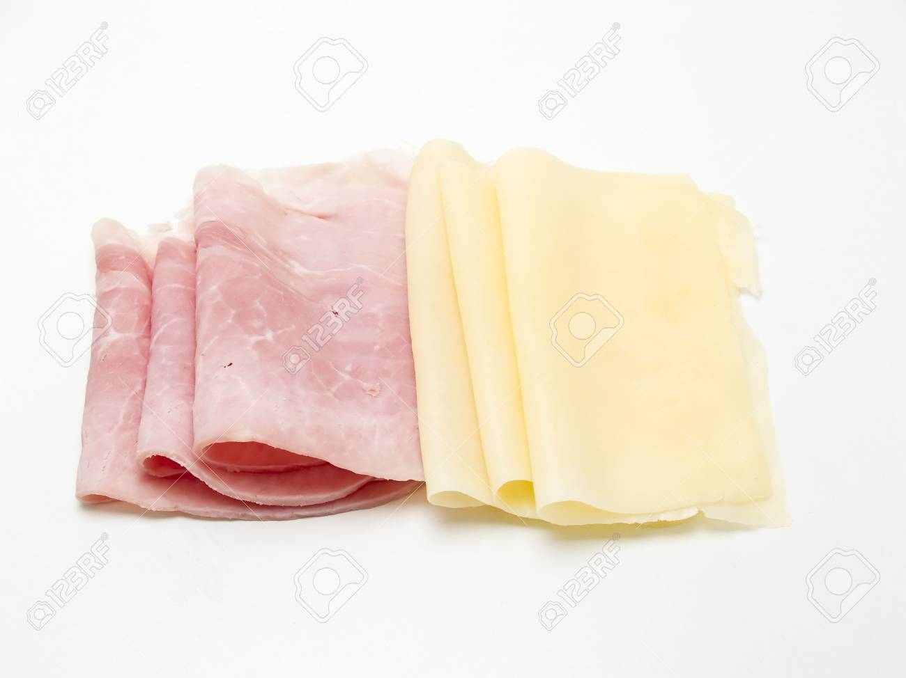

Ingredientes
- Queso Rallado
- Lonchas de Jamón
Pasos
Primer paso:
Sobre papel encerado (de hornear) ponemos el queso rallado haciendo la forma del jamón. Hay que tener cuidado de no pegarlas mucho, no queremos que se mezclen.
Segundo paso:
Las metemos en el horno precalentado y os aconsejo que no os vayáis muy lejos, estarán listas pronto.
Tercer paso:
En el momento de sacarlas hay que ponerles, con cuidado de no quemarse, las lonchas de jamón, una sobre cada queso. Sin detenernos vamos enrollándolas, ya que cuando se endurezca no podremos hacerlo.